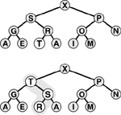
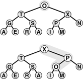
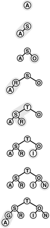
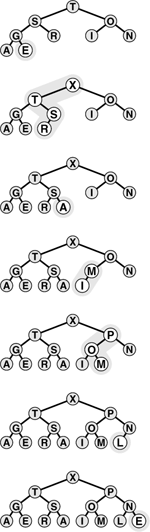
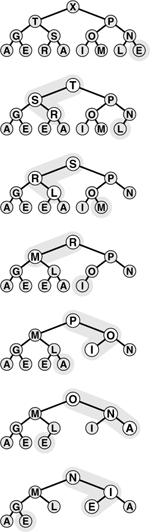
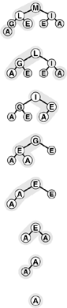

C++ Programming Robert Sedgewick - Princeton University Addison Wesley Professional Algorithms in C++, Parts 1–4: Fundamentals, Data Structure, Sorting, Searching, Third Edition
9.3. Algorithms on Heaps
The priority-queue algorithms on heaps all work by first making a simple modification that could violate the heap condition, then traveling through the heap, modifying the heap as required to ensure that the heap condition is satisfied everywhere. This process is sometimes called heapifying, or just fixing the heap. There are two cases. When the priority of some node is increased (or a new node is added at the bottom of a heap), we have to travel up the heap to restore the heap condition. When the priority of some node is decreased (for example, if we replace the node at the root with a new node), we have to travel down the heap to restore the heap condition. First, we consider how to implement these two basic functions; then, we see how to use them to implement the various priority-queue operations.
If the heap property is violated because a node's key becomes larger than that node's parent's key, then we can make progress toward fixing the violation by exchanging the node with its parent. After the exchange, the node is larger than both its children (one is the old parent, the other is smaller than the old parent because it was a child of that node) but may be still be larger than its parent. We can fix that violation in the same way, and so forth, moving up the heap until we reach a node with larger key, or the root. An example of this process is shown in Figure 9.3. The code is straightforward, based on the notion that the parent of the node at position k in a heap is at position k/2. Program 9.3 is an implementation of a function that restores a possible violation due to increased priority at a given node in a heap by moving up the heap.
The tree depicted on the top is heap-ordered except for the node T on the bottom level. If we exchange T with its parent, the tree is heap-ordered, except possibly that T may be larger than its new parent. Continuing to exchange T with its parent until we encounter the root or a node on the path from T to the root that is larger than T, we can establish the heap condition for the whole tree. We can use this procedure as the basis for the insert operation on heaps, to reestablish the heap condition after adding a new element to a heap (at the rightmost position on the bottom level, starting a new level if necessary).

Program 9.3. Bottom-up heapify|
To restore the heap condition when a node's priority is increased, we move up the heap, exchanging the node at position k with its parent (at position k/2) if necessary, continuing as long as a[k/2]<a[k] or until we reach the top of the heap.
template <class Item>
void fixUp(Item a[], int k)
{
while (k > 1 && a[k/2] < a[k])
{ exch(a[k], a[k/2]); k = k/2; }
}
|
If the heap property is violated because a node's key becomes smaller than one or both of that node's childrens' keys, then we can make progress toward fixing the violation by exchanging the node with the larger of its two children. This switch may cause a violation at the child; we fix that violation in the same way, and so forth, moving down the heap until we reach a node with both children smaller, or the bottom. An example of this process is shown in Figure 9.4. The code again follows directly from the fact that the children of the node at position k in a heap are at positions 2k and 2k + 1. Program 9.4 is an implementation of a function that restores a possible violation due to increased priority at a given node in a heap by moving down the heap. This function needs to know the size of the heap (N) in order to be able to test when it has reached the bottom.
The tree depicted on the top is heap-ordered, except at the root. If we exchange the O with the larger of its two children (X), the tree is heap-ordered, except at the subtree rooted at O. Continuing to exchange O with the larger of its two children until we reach the bottom of the heap or a point where O is larger than both its children, we can establish the heap condition for the whole tree. We can use this procedure as the basis for the remove the maximum operation on heaps, to reestablish the heap condition after replacing the key at the root with the rightmost key on the bottom level.

These two operations are independent of the way that the tree structure is represented, as long as we can access the parent (for the bottom-up method) and the children (for the top-down method) of any node. For the bottom-up method, we move up the tree, exchanging the key in the given node with the key in its parent until we reach the root or a parent with a larger (or equal) key. For the top-down method, we move down the tree, exchanging the key in the given node with the largest key among that node's children, moving down to that child, and continuing down the tree until we reach the bottom or a point where no child has a larger key. Generalized in this way, these operations apply not just to complete binary trees, but also to any tree structure. Advanced priority-queue algorithms usually use more general tree structures, but rely on these same basic operations to maintain access to the largest key in the structure, at the top.
Program 9.4. Top-down heapify|
To restore the heap condition when a node's priority is decreased, we move down the heap, exchanging the node at position k with the larger of that node's two children if necessary and stopping when the node at k is not smaller than either child or the bottom is reached. Note that if N is even and k is N/2, then the node at k has only one child—this case must be treated properly!
The inner loop in this program has two distinct exits: one for the case that the bottom of the heap is hit, and another for the case that the heap condition is satisfied somewhere in the interior of the heap. It is a prototypical example of the need for the break construct.
template <class Item>
void fixDown(Item a[], int k, int N)
{
while (2*k <= N)
{ int j = 2*k;
if (j < N && a[j] < a[j+1]) j++;
if (!(a[k] < a[j])) break;
exch(a[k], a[j]); k = j;
}
}
|
If we imagine the heap to represent a corporate hierarchy, with each of the children of a node representing subordinates (and the parent representing the immediate superior), then these operations have amusing interpretations. The bottom-up method corresponds to a promising new manager arriving on the scene, being promoted up the chain of command (by exchanging jobs with any lower-qualified boss) until the new person encounters a higher-qualified boss. The top-down method is analogous to the situation when the president of the company is replaced by someone less qualified. If the president's most powerful subordinate is stronger than the new person, they exchange jobs, and we move down the chain of command, demoting the new person and promoting others until the level of competence of the new person is reached, where there is no higher-qualified subordinate (this idealized scenario is rarely seen in the real world). Drawing on this analogy, we often refer to a movement up a heap as a promotion.
Program 9.5. Heap-based priority queue|
To implement insert, we increment N by 1, add the new element at the end of the heap, then use fixUp to restore the heap condition. For getmax, the size of the heap has to decrease by 1, so we take the value to be returned from pq[1], then reduce the size of the heap by moving pq[N] to pq[1] and using fixDown to restore the heap condition. The implementations of the constructor and empty are trivial. The first position in the array, pq[0], is not used, but may be available as a sentinel for some implementations.
template <class Item>
class PQ
{
private:
Item *pq;
int N;
public:
PQ(int maxN)
{ pq = new Item[maxN+1]; N = 0; }
int empty() const
{ return N == 0; }
void insert(Item item)
{ pq[++N] = item; fixUp(pq, N); }
Item getmax()
{
exch(pq[1], pq[N]);
fixDown(pq, 1, N-1);
return pq[N--];
}
};
|
These two basic operations allow efficient implementation of the basic priority-queue ADT, as given in Program 9.5. With the priority queue represented as a heap-ordered array, using the insert operation amounts to adding the new element at the end and moving that element up through the heap to restore the heap condition; the remove the maximum operation amounts to taking the largest value off the top, then putting in the item from the end of the heap at the top and moving it down through the array to restore the heap condition.
Property 9.2. The insert and remove the maximum operations for the priority queue abstract data type can be implemented with heap-ordered trees such that insert requires no more than lg N comparisons and remove the maximum no more than 2lg N comparisons, when performed on an N-item queue|
Both operations involve moving along a path between the root and the bottom of the heap, and no path in a heap of size N includes more than lg N elements (see, for example, Property 5.8 and Exercise 5.77). The remove the maximum operation requires two comparisons for each node: one to find the child with the larger key, the other to decide whether that child needs to be promoted.
|
Figures 9.5 and 9.6 show an example in which we construct a heap by inserting items one by one into an initially empty heap. In the array representation that we have been using, this process corresponds to heap ordering the array by moving sequentially through the array, considering the size of the heap to grow by 1 each time that we move to a new item, and using fixUp to restore the heap order. The process takes time proportional to N log N in the worst case (if each new item is the largest seen so far, it travels all the way up the heap), but it turns out to take only linear time on the average (a random new item tends to travel up only a few levels). In Section 9.4 we shall see a way to construct a heap (to heap order an array) in linear worst-case time.
This sequence depicts the insertion of the keys A S O R T I N G into an initially empty heap. New items are added to the heap at the bottom, moving from left to right on the bottom level. Each insertion affects only the nodes on the path between the insertion point and the root, so the cost is proportional to the logarithm of the size of the heap in the worst case.

This sequence depicts insertion of the keys E X A M P L E into the heap started in Figure 9.5. The total cost of constructing a heap of size N is less than lg 1 + lg 2 + ... + lg N, which is less than N lg N.

The basic fixUp and fixDown operations in Programs 9.3 and 9.4 also allow direct implementation for the change priority and remove operations. To change the priority of an item somewhere in the middle of the heap, we use fixUp to move up the heap if the priority is increased, and fixDown to go down the heap if the priority is decreased. Full implementations of such operations, which refer to specific data items, make sense only if a handle is maintained for each item to that item's place in the data structure. We shall consider implementations that do so in detail in Sections 9.5 through 9.7.
Property 9.3. The change priority, remove, and replace the maximum operations for the priority queue abstract data type can be implemented with heap-ordered trees such that no more than 2 lg N comparisons are required for any operation on an N-item queue|
Since they require handles to items, we defer considering implementations that support these operations to Section 9.6 (see Program 9.12 and Figure 9.14). They all involve moving along one path in the heap, perhaps from top to bottom or bottom to top in the worst case.
|
Program 9.6. Sorting with a priority queue|
To sort a subarray a[l], ..., a[r] using a priority-queue ADT, we simply use insert to put all the elements on the priority queue, and then use getmax to remove them, in decreasing order. This sorting algorithm runs in time proportional to N lg N, but uses extra space proportional to the number of items to be sorted (for the priority queue).
#include "PQ.cxx"
template <class Item>
void PQsort(Item a[], int 1, int r)
{ int k;
PQ<Item> pq(r-l+1);
for (k = l; k <= r; k++) pq.insert(a[k]);
for (k = r; k >= l; k--) a[k] = pq.getmax();
}
|
Note carefully that the join operation is not included on this list. Combining two priority queues efficiently seems to require a much more sophisticated data structure. We shall consider such a data structure in detail in Section 9.7. Otherwise, the simple heap-based method given here suffices for a broad variety of applications. It uses minimal extra space and is guaranteed to run efficiently except in the presence of frequent and large join operations.
As we have mentioned, we can use any priority queue to develop a sorting method, as shown in Program 9.6. We simply insert all the keys to be sorted into the priority queue, then repeatedly use remove the maximum to remove them all in decreasing order. Using a priority queue represented as an unordered list in this way corresponds to doing a selection sort; using an ordered list corresponds to doing an insertion sort.
Figures 9.5 and 9.6 give an example of the first phase (the construction process) when a heap-based priority-queue implementation is used; Figures 9.7 and 9.8 show the second phase (which we refer to as the sortdown process) for the heap-based implementation. For practical purposes, this method is comparatively inelegant, because it unnecessarily makes an extra copy of the items to be sorted (in the priority queue). Also, using N successive insertions is not the most efficient way to build a heap from N given elements. In the next section, we address these two points as we consider an implementation of the classical heapsort algorithm.
After replacing the largest element in the heap by the rightmost element on the bottom level, we can restore the heap order by sifting down along a path from the root to the bottom.

This sequence depicts removal of the rest of the keys from the heap in Figure 9.7. Even if every element goes all the way back to the bottom, the total cost of the sorting phase is less than lg N + ... + lg 2 + lg 1; which is less than N log N.

Exercises |  9.21 Give the heap that results when the keys E A S Y Q U E S T I O N are inserted into an initially empty heap. 9.21 Give the heap that results when the keys E A S Y Q U E S T I O N are inserted into an initially empty heap.
| | 9.22 Using the conventions of Exercise 9.1 give the sequence of heaps produced when the operations
P R I O * R * * I * T * Y * * * Q U E * * * U * E
are performed on an initially empty heap. | | 9.23 Because the exch primitive is used in the heapify operations, the items are loaded and stored twice as often as necessary. Give more efficient implementations that avoid this problem, a la insertion sort. | | 9.24 Why do we not use a sentinel to avoid the j<N test in fixDown? | |  9.25 Add the replace the maximum operation to the heap-based priority-queue implementation of Program 9.5. Be sure to consider the case when the value to be added is larger than all values in the queue. Note: Use of pq[0] leads to an elegant solution. 9.25 Add the replace the maximum operation to the heap-based priority-queue implementation of Program 9.5. Be sure to consider the case when the value to be added is larger than all values in the queue. Note: Use of pq[0] leads to an elegant solution.
| | 9.26 What is the minimum number of keys that must be moved during a remove the maximum operation in a heap? Give a heap of size 15 for which the minimum is achieved. | | 9.27 What is the minimum number of keys that must be moved during three successive remove the maximum operations in a heap? Give a heap of size 15 for which the minimum is achieved.
|
|